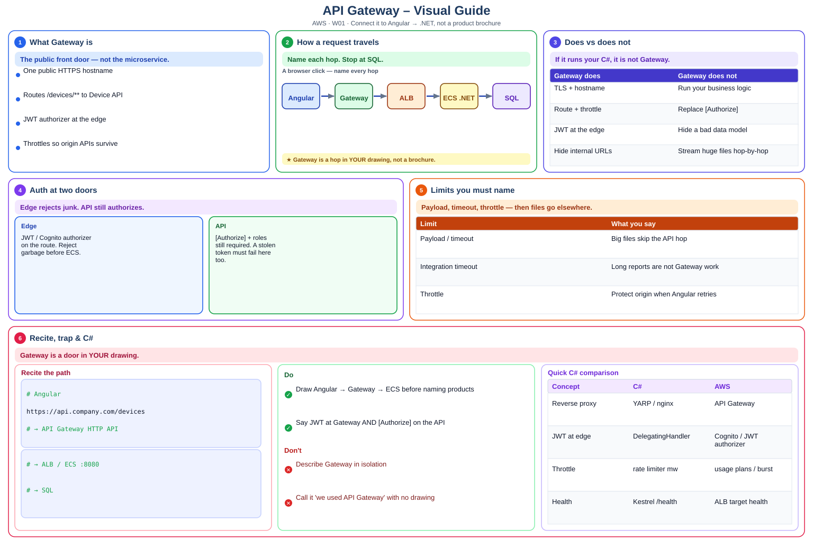

Definition
- Why: One hostname, TLS, rate limits, API keys/JWT authorizers, hide internal URLs.
- Routing: Path /devices/** to the Device service integration (HTTP/NLB/ALB).
- Auth: JWT/Cognito authorizer at the gateway plus [Authorize] on the API — defense in depth.
- Limits: Payload size, timeouts. Large files should not stream through every hop (see .NET D67).

Decision flowchart
Read from the top. If the answer is YES, stop at that box. If NO, go down.
Step-by-step (beginner friendly)
- Step 1 — Why (before/after)
What it means: One hostname, TLS, rate limits, API keys/JWT authorizers, hide internal URLs.
❌ BeforeAPI Gateway is an AWS service for APIs.✔ AfterAngular → Gateway (JWT + route) → Device API on ECS.Takeaway: Why — pair definition with Before → After.
- Step 2 — Routing (before/after)
What it means: Path /devices/** to the Device service integration (HTTP/NLB/ALB).
❌ Before// BEFORE — skip Routing✔ After// AFTER — apply Routing with a project exampleTakeaway: Routing — pair definition with Before → After.
- Step 3 — Auth (before/after)
What it means: JWT/Cognito authorizer at the gateway plus [Authorize] on the API — defense in depth.
❌ Before// BEFORE — skip Auth✔ After// AFTER — apply Auth with a project exampleTakeaway: Auth — pair definition with Before → After.
- Step 4 — Limits (before/after)
What it means: Payload size, timeouts. Large files should not stream through every hop (see .NET D67).
❌ Before// BEFORE — skip Limits✔ After// AFTER — apply Limits with a project exampleTakeaway: Limits — pair definition with Before → After.
Interview prep W01 — Why API Gateway, routing, auth, throttling, exposing microservices.
- What is it?
- Where did you use it? (actual project)
- Why did you use it? (design decision)
- How did you implement it? (hands-on)
- What problem did it solve?
Quick reference
| Idea | Remember |
|---|---|
Why | One hostname, TLS, rate limits, API keys/JWT authorizers, hide internal URLs. |
Routing | Path /devices/** to the Device service integration (HTTP/NLB/ALB). |
Auth | JWT/Cognito authorizer at the gateway plus [Authorize] on the API — defense in depth. |
Limits | Payload size, timeouts. Large files should not stream through every hop (see .NET D67). |
1. Why — full example
What it means: One hostname, TLS, rate limits, API keys/JWT authorizers, hide internal URLs.
Takeaway: Why — explain with a project story, not only a definition.
2. Routing — full example
What it means: Path /devices/** to the Device service integration (HTTP/NLB/ALB).
Takeaway: Routing — explain with a project story, not only a definition.
3. Auth — full example
What it means: JWT/Cognito authorizer at the gateway plus [Authorize] on the API — defense in depth.
Takeaway: Auth — explain with a project story, not only a definition.
4. Limits — full example
What it means: Payload size, timeouts. Large files should not stream through every hop (see .NET D67).
Takeaway: Limits — explain with a project story, not only a definition.
Self-check quiz
Why?Show answer
Routing matter?Show answer
Show answer
Q: Explain API Gateway for an interviewer.
A: I put the gateway in the architecture drawing before I name AWS products. Angular calls the gateway; the gateway forwards to ECS services. Throttling protects origin APIs.
Q: What does interview-ready look like for this skill?
A: Connects the gateway to their Angular → .NET flow, not a product brochure
Q: Give the Interview 5 in one breath.
A: What it is, where I used it, why we chose it, how I implemented it, and the problem it solved.
Practice
- Explain
Whywith a project example. - Compare
Routingwith an alternative. - Answer the Interview 5 for: Connects the gateway to their Angular → .NET flow, not a product brochure
- Speak the Interview 5 for W01 out loud (60 seconds).
Gateway is a door in YOUR drawing.
Syntax-colored view
| 1 | # mental map |
| 2 | # Angular https://api.company.com/devices |
| 3 | # → API Gateway HTTP API |
| 4 | # → ALB / ECS service :8080 |
| 5 | # → SQL |